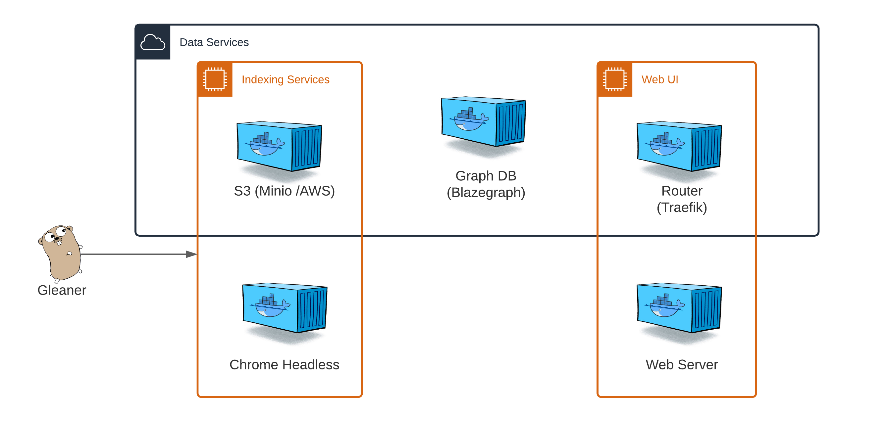

Indexing with Gleaner
Contents
Indexing with Gleaner#

Gleaner (app)#
The Gleaner applications performs the retrieval and loading of JSON-LD documents from the web following structured data on the web patterns. Gleaner is available for Linux, Mac OS X and Windows.
While Gleaner is a stand alone app, it needs to interact with an object store to support data storage and other operations. These dependencies are met within the Gleaner Indexing Services or Data Service Docker compose files.
Warning
This documentation is in development. The primary testing environments are Linux and other UNIX based platforms such as Mac OS X. If you are on Windows, there may be some issues. If you can use a Linux subsystem on Windows, you may experience better results. We will test with Windows eventually and update documentation as needed.
Quick Start steps#
This quick start guide is focused on setting up and testing Gleaner in a local environnement. It is similar to how you might run Gleaner in a production environment but lacks the routing and other features likely desired for such a situation.
Note
This documentation assumes a basic understanding of Docker and experience with basic Docker activities like starting and stopping containers. It also assumes an understanding of using a command line interface and editing configuration files in the YAML format.
Command
From this point down, the documentation will attempt to put all commands you should issue in this admonition style box.
In the end, this is the table of applications and config files you will need. In this guide we will go through downloading, setting them up and running Gleaner to index documents from the web.
Gleaner |
Docker |
Minio Client |
|---|---|---|
config.yaml |
|
|
schemaorg-current-https.jsonld |
gleaner-DS-NoRouter.yml |
Grab Gleaner and the support files we need#
We will need to get the Gleaner binary for your platform and also the Gleaner configuration file template. To do this, visit the Gleaner Releases page and pick the release Ocean InfoHubdev rc1. Under the Assets drop down you should see the files we need. Get:
Gleaner for your platform
Gleaner config template: template_v2.0.yaml
Gleaner indexing service compose file: gleaner-IS.yml
Helper environment setup script: setenvIS.sh
For this demonstration, we will be running on linux, so this would look something like:
Command
curl -L -O https://github.com/earthcubearchitecture-project418/gleaner/releases/download/2.0.25/gleaner
curl -L -O https://github.com/earthcubearchitecture-project418/gleaner/releases/download/2.0.25/gleaner-IS.yml
curl -L -O https://github.com/earthcubearchitecture-project418/gleaner/releases/download/2.0.25/setenvIS.sh
curl -L -O https://github.com/earthcubearchitecture-project418/gleaner/releases/download/2.0.25/template_v2.0.yaml
Note
You can download these with any tool you wish or through the browser. Above we downloaded used the command line curl tool. For GitHub, be sure to add the -L to inform curl to follow redirects to the object to download.
Command
You may need to change the permission on your gleaner file to ensure it can be run. On Linux this would look something like the following.
chmod 755 gleaner
We then need to visit Schema.org for Developers to pull down the
appropriate JSON-LD context. For this work we will want to pull down the schemaorg-current-https in JSON-LD format.
It also should work to do something similar to the following:
Command
curl -O https://schema.org/version/latest/schemaorg-current-https.jsonld
About the compose file(s)#
The above steps have collected the resources for the indexer. We now want to set up the services that Gleaner will use to perform the indexing. To do that we use Docker or an appropriate run time alternative like Podman or others. For this example, we will assume you are using the Docker client.
As noted, a basic understanding of Docker and the ability to issue Docker cli commands to start and stop containers is required. If you are new do Docker, we recommend you visit and read: Get Started with Docker.
We need to select the type of services we wish to run. The various versions of these Docker compose file can be found in the Gleaner-compose deployment directory.
Why pick one over the other?
Choose Gleaner IS if you simply wish to retrieve the JSON-LD into a data warehouse to use in your own workflows
Choose Gleaner DS if you wish to build out a graph and want to use the default contains used by Gleaner.
Note
We wont look at this file in detail here since there will hopefully be no required edits. You can see the file in detail in the Index Services section.
Edit environment variables setup script#
We have Docker and the appropriate compose file. The compose files require a set of environment variables
to be populated to provide the local hosts information needed to run. You can set these yourself or
use or reference the setenv.sh file in the Gleaner-compose repository in the
Gleaner-compose deployment directory.
You may also need to visit information about permissions at
Post-installation steps for Linux if you are
having permission issues.
Let’s take a look at the script.
1#!/bin/bash
2
3# Object store keys
4export MINIO_ACCESS_KEY=worldsbestaccesskey
5export MINIO_SECRET_KEY=worldsbestsecretkey
6
7# local data volumes
8export GLEANER_BASE=/tmp/gleaner/
9mkdir -p ${GLEANER_BASE}
10export GLEANER_OBJECTS=${GLEANER_BASE}/datavol/s3
11export GLEANER_GRAPH=${GLEANER_BASE}/datavol/graph
You may wish to edit file to work better with your environment. By default it will attempt to use localhost to resolve with and host local runtime data in a /tmp/gleaner directory.
Spin up the containers#
Load our environment variables to the shell:
Command
source setenv.sh
Then start the containers:
Command
docker-compose -f gleaner-IS.yml up -d
If all has gone well, you should be able to see your running containers with
Command
docker ps
and see results similar to:
CONTAINER ID IMAGE COMMAND CREATED STATUS PORTS NAMES
c4b7097f5e06 nawer/blazegraph "docker-entrypoint.s…" 8 seconds ago Up 7 seconds 0.0.0.0:9999->9999/tcp test_triplestore_1
ca08c24963a0 minio/minio:latest "/usr/bin/docker-ent…" 8 seconds ago Up 7 seconds 0.0.0.0:9000->9000/tcp test_s3system_1
24274eba0d34 chromedp/headless-shell:latest "/headless-shell/hea…" 8 seconds ago Up 7 seconds 0.0.0.0:9222->9222/tcp test_headless_1
Edit Gleaner config file#
We have all the files we need and we have our support services running. The next and final step is to edit our Gleaner configuration file. This will let Gleaner know the location of the support services, the JSON-LD context file and the locations of the resources we wish to index.
Let’s take a look at the full configuration file first and then break down each section.
1---
2minio:
3 address: 0.0.0.0
4 port: 9000
5 accessKey: worldsbestaccesskey
6 secretKey: worldsbestsecretkey
7 ssl: false
8 bucket: gleaner
9gleaner:
10 runid: oih # this will be the bucket the output is placed in...
11 summon: true # do we want to visit the web sites and pull down the files
12 mill: true
13context:
14 cache: true
15contextmaps:
16- prefix: "https://schema.org/"
17 file: "./jsonldcontext.json" # wget http://schema.org/docs/jsonldcontext.jsonld
18- prefix: "http://schema.org/"
19 file: "./jsonldcontext.json" # wget http://schema.org/docs/jsonldcontext.jsonld
20summoner:
21 after: "" # "21 May 20 10:00 UTC"
22 mode: full # full || diff: If diff compare what we have currently in gleaner to sitemap, get only new, delete missing
23 threads: 1
24 delay: 0 # milliseconds (1000 = 1 second) to delay between calls (will FORCE threads to 1)
25 headless: http://0.0.0.0:9222 # URL for headless see docs/headless
26millers:
27 graph: true
28 #geojson: false
29sitegraphs:
30- name: aquadocs
31 url: https://oih.aquadocs.org/aquadocs.json
32 headless: false
33 pid: https://www.re3data.org/repository/aquadocs
34 properName: AquaDocs
35 domain: https://aquadocs.org
36sources:
37- name: samplesearth
38 url: https://samples.earth/sitemap.xml
39 headless: false
40 pid: https://www.re3data.org/repository/samplesearth
41 properName: Samples Earth (DEMO Site)
42 domain: https://samples.earth
43- name: marinetraining
44 url: https://www.marinetraining.eu/sitemap.xml
45 headless: false
46 pid: https://www.re3data.org/repository/marinetraining
47 properName: Marine Training EU
48 domain: https://marinetraining.eu/
49- name: marineie
50 url: http://data.marine.ie/geonetwork/srv/eng/portal.sitemap
51 headless: true
52 pid: https://www.re3data.org/repository/marineie
53 properName: Marine Institute Data Catalogue
54 domain: http://data.marine.ie
55- name: oceanexperts
56 url: https://oceanexpert.org/assets/sitemaps/sitemapTraining.xml
57 headless: false
58 pid: https://www.re3data.org/repository/oceanexpert
59 properName: OceanExpert UNESCO/IOC Project Office for IODE
60 domain: https://oceanexpert.org/
61# - name: obis
62# url: https://obis.org/sitemap/sitemap_datasets.xml
63# headless: false
64# pid: https://www.re3data.org/repository/obis
65# properName: Ocean Biodiversity Information System
66# domain: https://obis.org
Object store#
1minio:
2 address: 0.0.0.0
3 port: 9000
4 accessKey: worldsbestaccesskey
5 secretKey: worldsbestsecretkey
6 ssl: false
7 bucket: gleaner
The minio section defines the IP and port of the object store. For this case, we are using minio and these are the IP and port from our docker compose steps above. Note, if you were to use Ceph or AWS S3, this section is still labeled minio. You simply need to update the property values.
Gleaner#
1gleaner:
2 runid: oih # this will be the bucket the output is placed in...
3 summon: true # do we want to visit the web sites and pull down the files
4 mill: true
This passes a few high level concpets.
runid:
summon
mill
Context sections#
1context:
2 cache: true
3contextmaps:
4- prefix: "https://schema.org/"
5 file: "./jsonldcontext.json" # wget http://schema.org/docs/jsonldcontext.jsonld
6- prefix: "http://schema.org/"
7 file: "./jsonldcontext.json" # wget http://schema.org/docs/jsonldcontext.jsonld
Comments for the context sections
Summoner section#
1summoner:
2 after: "" # "21 May 20 10:00 UTC"
3 mode: full # full || diff: If diff compare what we have currently in gleaner to sitemap, get only new, delete missing
4 threads: 1
5 delay: 0 # milliseconds (1000 = 1 second) to delay between calls (will FORCE threads to 1)
6 headless: http://0.0.0.0:9222 # URL for headless see docs/headless
Comments for the summoner sections
Millers section#
1millers:
2 graph: true
3 #geojson: false
Comments for the miller sections
Site graphs section#
1sitegraphs:
2- name: aquadocs
3 url: https://oih.aquadocs.org/aquadocs.json
4 headless: false
5 pid: https://www.re3data.org/repository/aquadocs
6 properName: AquaDocs
7 domain: https://aquadocs.org
Comments for the sitegrpah sections
Sources section#
1sources:
2- name: samplesearth
3 url: https://samples.earth/sitemap.xml
4 headless: false
5 pid: https://www.re3data.org/repository/samplesearth
6 properName: Samples Earth (DEMO Site)
7 domain: https://samples.earth
8- name: marinetraining
9 url: https://www.marinetraining.eu/sitemap.xml
10 headless: false
11 pid: https://www.re3data.org/repository/marinetraining
12 properName: Marine Training EU
13 domain: https://marinetraining.eu/
14- name: marineie
15 url: http://data.marine.ie/geonetwork/srv/eng/portal.sitemap
16 headless: true
17 pid: https://www.re3data.org/repository/marineie
18 properName: Marine Institute Data Catalogue
19 domain: http://data.marine.ie
20- name: oceanexperts
21 url: https://oceanexpert.org/assets/sitemaps/sitemapTraining.xml
22 headless: false
23 pid: https://www.re3data.org/repository/oceanexpert
24 properName: OceanExpert UNESCO/IOC Project Office for IODE
25 domain: https://oceanexpert.org/
26# - name: obis
27# url: https://obis.org/sitemap/sitemap_datasets.xml
28# headless: false
29# pid: https://www.re3data.org/repository/obis
30# properName: Ocean Biodiversity Information System
31# domain: https://obis.org
Comments for the sources sections
Run gleaner#
For this example we are going to run Gleaner directly. In a deployed instance you may run Gleaner via a script or cron style service. We will document that elsewhere.
We can do a quick test of the setup.
Command
./gleaner -cfg template_v2.0 -setup
For now, we are ready to run Gleaner. Try:
Command
./gleaner -cfg template_v2.0
Note
Leave the suffix like .yaml off the name of the config file. The config system can also read json and other formats. So simply leave the suffix off and let the config code inspect the contents.
Load results to a graph and test#
You have set up the server environment and Gleaner and done your run. Things look good but you don’t have a graph you can work with yet. You need to load the JSON-LD into the triplestore in order to start playing.
Minio Object store#
To view the object store you could use your browser and point it on the default minio port at 9000. This typically something like localhost:9000.
If you wish to continue to use the command line you can use the Minio client at Minio Client Quickstart guide.
Once you have it installed and working, you can write an entry for our object store with:
Command
./mc alias set minio http://0.0.0.0:9000 worldsbestaccesskey worldsbestsecretkey
Load Triplestore#
We now want to load these objects, which are JSON-LD files holding RDF based graph data, into a graph database. We use the term, triplestore, to define a graph database designed to work with the RDF data model and provide SPARQL query support over that graph data.
Simple script loading
Nabu
Try out a simple SPARQL query
References#
The following are some reference which may provide more information on the various technologies used in this approach.